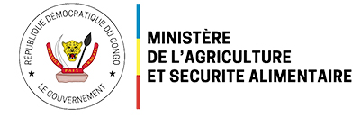
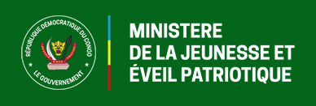
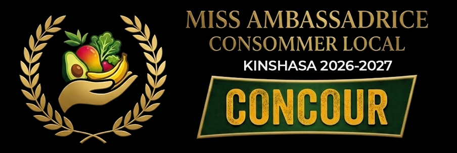

Agriculture & marchés locaux
Du champ à l’assiette, célébrons le vivant
« le concours met en lumière celles et ceux qui font tourner l’économie locale, promouvoir la consommation locale avec le leadership féminin et l’entrepreneuriat »
Engagement & rayonnement
Il est crucial de valoriser les petits producteurs et agripreneurs locaux via la transformation sur place et des circuits courts (marchés locaux, coopératives), réduisant ainsi la dépendance aux importations. Renforcer cette souveraineté alimentaire implique une citoyenneté active privilégiant la consommation locale à Kinshasa.
Mettre en avant les filières locales, la qualité et la durabilité des productions de la RDC et des environs de Kinshasa.
Chaque commune désigne une représentante : porte-parole du « consommer local » au plus près des habitants.
Les 24 candidates se retrouvent pour un show final : épreuves, élégance et engagement — une seule lauréate couronnée.
Découvrez les représentantes du consommer local 2026 pour chaque commune de la ville-province de Kinshasa.
Lancement & mobilisation
Annonce officielle, partenaires et communication nationale.
Sélection par commune
Chaque commune présente son ambassadrice pour le consommer local.
Préparation & médias
Ateliers, visibilité et préparation à la grande finale.
Les 24 ambassadrices s’affrontent pour le titre et la couronne — au programme : Exposition (Exhibition), Music, Dance, Defile, la présentation de projet et Coronation.
Date à confirmer
Lieu et billetterie seront communiqués sur ce site et les réseaux officiels.
Comité d’organisation et membres du jury.
Président·e du jury
Nom à confirmer
Direction du concours
Nom à confirmer
Personnalité agricole
Nom à confirmer
Logos des institutions, entreprises et médias.



Pour vous inscrire, contactez-nous sur WhatsApp au numéro ci-dessous ou via le bouton :
https://wa.me/243831700110 +243 831 700 110
Presse, partenariats ou questions générales — laissez un message.